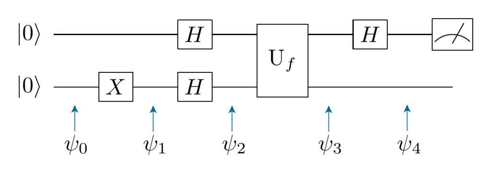
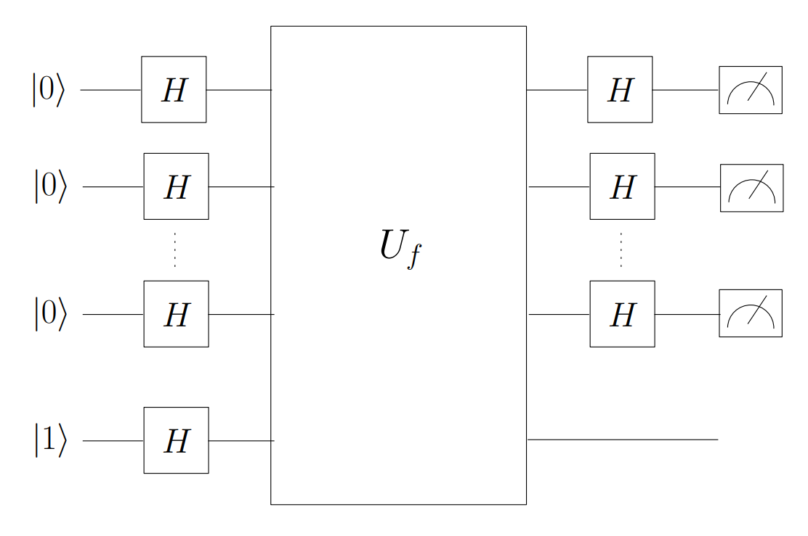

$
\definecolor{r}{RGB}{255,0,0}
\definecolor{g}{RGB}{0,255,0}
\definecolor{b}{RGB}{0,0,255}
\definecolor{d}{RGB}{255,255,255}
\newcommand{\ket}[1]{ \mathbf{|#1\rangle} }
$
Quantum Computing tl;dr
Viliam Rockai
whoami
- Studied AI
- Work at DNAstack
- Like to code intuitive code
- Like to get familiar with weird stuff
Agenda
- Introduction
- Math prerequisites
- Qubit
- Quantum logic gates
- Deutsch's oracle
Introduction
$${\displaystyle i\hbar {\frac {d}{dt}}\vert \Psi (t)\rangle ={\hat {H}}\vert \Psi (t)\rangle }$$
$${\displaystyle i\hbar {\frac {\partial }{\partial t}}\Psi (\mathbf {r} ,t)=\left[{\frac {-\hbar ^{2}}{2m}}\nabla ^{2}+V(\mathbf {r} ,t)\right]\Psi (\mathbf {r} ,t)}$$
Complex Numbers
We can deal without them today, but if you're into this, you better get familiar with them.
Addition modulo 2
$\oplus$ is just another way to write XOR.
$$
\begin{array}{ccc}
x & y & x \oplus y \\
\hline
0 & 0 & 0 \\
0 & 1 & 1 \\
1 & 0 & 1 \\
1 & 1 & 0 \\
\end{array}
$$
"Regular computer bit is either a 1 or a 0, on or off. A quantum state can be much more complex than that,
because as we know [speeding up dramatically] things can be both particle and wave at the same times and the
uncertainty around quantum states [laughter] allows us to encode more information into a much smaller
computer."
Justin Trudeu
Qubit
$$
\alpha\ket{0} + \beta\ket{1}
$$
$$
\begin{bmatrix}
\alpha \\
\beta \\
\end{bmatrix}
$$
$$
\ket{0} =
\begin{bmatrix}
1 \\
0 \\
\end{bmatrix}
=
1\ket{0} + 0\ket{1}
=
\ket{0}
$$
$$
\ket{1} =
\begin{bmatrix}
0 \\
1 \\
\end{bmatrix}
=
0\ket{0} + 1\ket{1}
=
\ket{1}
$$
Quantum Logic Gates
Must be a Unitary matrix!!!
Not Gate
$$
X \equiv
\begin{bmatrix}
0 & 1 \\
1 & 0 \\
\end{bmatrix}
$$
$$
X\begin{bmatrix}\alpha \\ \beta\end{bmatrix} =
\begin{bmatrix}0 & 1 \\ 1 & 0\end{bmatrix}\begin{bmatrix}\beta \\ \alpha\end{bmatrix} =
\begin{bmatrix}\beta \\ \alpha\end{bmatrix}
$$
Hadamard Gate
$$
H \equiv \frac{1}{\sqrt{2}}
\begin{bmatrix}
1 & 1 \\
1 & -1 \\
\end{bmatrix}
$$
$$
H\begin{bmatrix}\alpha \\ \beta\end{bmatrix} =
\alpha\frac{\ket{0} + \ket{1}}{\sqrt{2}} +
\beta\frac{\ket{0} - \ket{1}}{\sqrt{2}}
$$
$$
H\ket{0} =
H\begin{bmatrix}1 \\ 0\end{bmatrix} =
1\frac{\ket{0} + \ket{1}}{\sqrt{2}} +
0\frac{\ket{0} - \ket{1}}{\sqrt{2}} =
\frac{\ket{0} + \ket{1}}{\sqrt{2}}
$$
$$
H\ket{1} =
H\begin{bmatrix}0 \\ 1\end{bmatrix} =
0\frac{\ket{0} + \ket{1}}{\sqrt{2}} +
1\frac{\ket{0} - \ket{1}}{\sqrt{2}} =
\frac{\ket{0} - \ket{1}}{\sqrt{2}}
$$
Deutsch's algorithm
Not really useful. Artificial. Just to learn about QC.
Deutsch’s algorithm determines whether a function $$f:\{0,1\}\rightarrow \{0,1\}$$ is balanced or constant.
Constant: $$f(0) = f(1)$$
Balanced: $$f(0) \neq f(1)$$
The function
We consider the function as an input to the algorithm.
$$f(x) = 1$$
$$
\ket{0} =
\begin{bmatrix}
1\\
0\\
\end{bmatrix}
,
\ket{1} =
\begin{bmatrix}
0\\
1\\
\end{bmatrix}
$$
$$
N_f =
\begin{bmatrix}
0 & 0\\
1 & 1\\
\end{bmatrix}
,
N_f^TN_f \neq I
$$
Classical algorithm
Needs $$n^2 - 1$$ evaluations.
$$
n = 1
$$
$$
U_f =
\begin{bmatrix}
0 & 1 & 0 & 0 \\
1 & 0 & 0 & 0 \\
0 & 0 & 0 & 1 \\
0 & 0 & 1 & 0 \\
\end{bmatrix}
$$
$$
U_f U_f =
\begin{bmatrix}
1 & 0 & 0 & 0 \\
0 & 1 & 0 & 0 \\
0 & 0 & 1 & 0 \\
0 & 0 & 0 & 1 \\
\end{bmatrix}
$$
Deutsch's algorithm circuit

$\ket{\Psi_0}$ - Initialization
$$
\ket{\Psi_0} = \ket{0} \ket{0}
$$
$\ket{\Psi_1}$ - Qubit flip
$$
\ket{\Psi_1} = \ket{0} \ket{1}
$$
$\ket{\Psi_2}$ - Superposition
$$
\ket{\Psi_2} =
\frac{1}{2}
\left(
\ket{0}\ket{0} -
\ket{0}\ket{1} +
\ket{1}\ket{0} -
\ket{1}\ket{1}
\right)
$$
$\ket{\Psi_3}$ - Evaluation
$$
\ket{\psi_3} =
\frac{1}{2}
(
\ket{0} \ket{f(0)} -
\ket{0} \ket{1 \oplus f(0)} +
\ket{1} \ket{f(1)} -
\ket{1} \ket{1 \oplus f(1)}
)
$$
$\ket{\Psi_3}$ - Evaluation
Case 1: constant $f(x)$
$$
\ket{\psi_3} =
\frac{1}{2}
(
\ket{0} \ket{f(0)} -
\ket{0} \ket{1 \oplus f(0)} +
\ket{1} \ket{f(0)} -
\ket{1} \ket{1 \oplus f(0)}
)
\\
= \frac{1}{2}
(
(\ket{0} + \ket{1}) \otimes \ket{f(0)} -
(\ket{0} + \ket{1}) \otimes \ket{1 \oplus f(0)}
)
\\
= \frac{1}{2}
(
(\ket{0} + \ket{1}) \otimes
(\ket{f(0)\rangle - |1 \oplus f(0)})
)
\\
= \frac{1}{\sqrt{2}} \ket{+}
\otimes (
\ket{f(0)\rangle - |1 \oplus f(0)}
)
$$
$\ket{\Psi_3}$ - Evaluation
Case 2: balanced $f(x)$
$$
\definecolor{energy}{RGB}{114,0,172}
\definecolor{freq}{RGB}{45,177,93}
\color{energy}X
\ket{\psi_3} =
\frac{1}{2}
(
\ket{0} \ket{f(0)} -
\ket{0} \ket{f(1)} +
\ket{1} \ket{f(1)} -
\ket{1} \ket{f(0)}
)
\\
= \frac{1}{2}
(
(\ket{0} - \ket{1}) \otimes \ket{f(0)} -
(\ket{0} - \ket{1}) \otimes \ket{f(1)}
)
\\
= \frac{1}{2}
(
(\ket{0} - \ket{1}) \otimes
(\ket{f(0)\rangle - |f(1)})
)
\\
= \frac{1}{\sqrt{2}} \ket{-}
\otimes (
\ket{f(0)\rangle - |f(1)}
)
$$
$\ket{\Psi_4}$ - Superposition
Constant:
$$
\ket{\psi_3} =
\frac{1}{\sqrt{2}} \ket{+}
\otimes (
\ket{f(0)\rangle - |1 \oplus f(0)}
)
$$
$$
\ket{\psi_4} =
\frac{1}{\sqrt{2}} \ket{0} \otimes
(\ket{f(0)\rangle - |1 \oplus f(0)})
$$
Balanced:
$$
\ket{\psi_3} =
\frac{1}{\sqrt{2}} \ket{-}
\otimes (
\ket{f(0)\rangle - |f(1)}
)
$$
$$
\ket{\psi_4} =
\frac{1}{\sqrt{2}} \ket{1} \otimes
(\ket{f(0)\rangle - |f(1)})
$$
$\ket{\Psi_5}$ - Measurement
The Deutsch-Josza algorithm
